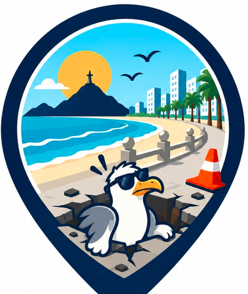

Cargando información comercial…
EL MURO DE NUESTRA CIUDAD
Lo que pasa en Mazatlán.
Noticias, avisos y reportes de nuestra comunidad en un solo lugar.
⌖El mapa requiere conexión a InternetEl muro de publicaciones sigue disponible.

MZTConectaPORQUE LO QUE PASA EN MAZATLÁN NOS UNE
Conoce los reportes, explora el mapa y participa en la comunidad de Mazatlán desde tu propia cuenta.
Los reportes ciudadanos son aportaciones de la comunidad y no representan comunicados oficiales.
BIENVENIDO A MZT CONECTA
Usa tu correo electrónico y contraseña para continuar.
Falta conectar Supabase. Los formularios están preparados, pero no crearán cuentas hasta introducir la URL y la clave publicable del proyecto.
Cargando información comercial…
EL MURO DE NUESTRA CIUDAD
Noticias, avisos y reportes de nuestra comunidad en un solo lugar.